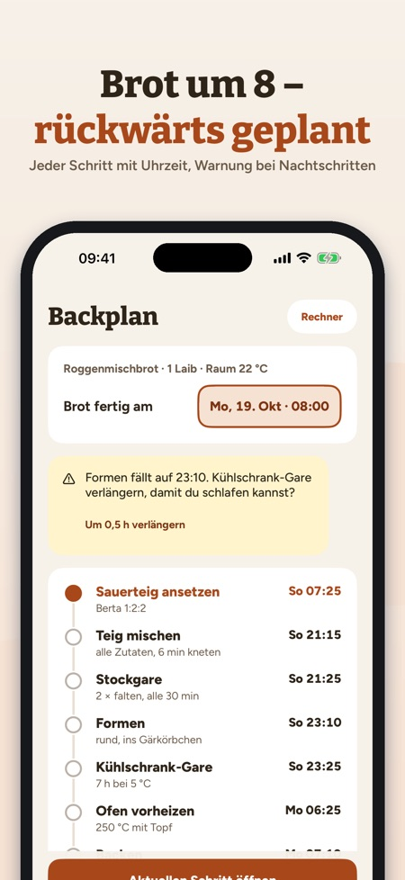
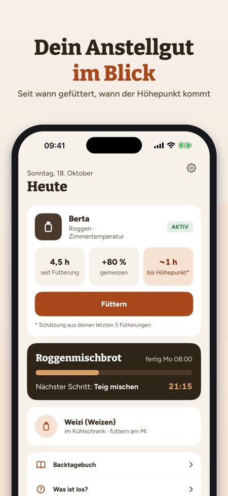
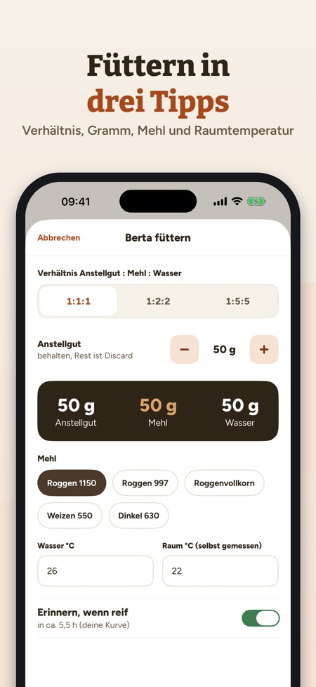

Riseplan rechnet rückwärts, wann du ansetzen, mischen und falten musst, damit dein Brot zur Wunschzeit fertig ist. Dazu Anstellgut-Tagebuch, Triebkurve und Rechner in Gramm und °C.



Du wählst, wann das Brot fertig sein soll, und Riseplan rechnet jeden Schritt zurück. Die Gärzeiten passen sich deiner Raumtemperatur an und sind als Faustregel gekennzeichnet.
Ja, mit Roggen, Weizen oder Dinkel, mit Alter und Fütterungsverlauf. Mehrere Anstellgüter schaltet der Einmalkauf frei.
Du misst die Höhe nach dem Füttern und siehst deine eigene Kurve, den Durchschnitt bis zum Höhepunkt und das maximale Volumen.
Aus Teiggewicht, Hydration, Sauerteig- und Salzanteil berechnet er Mehl, Wasser, Sauerteig und Salz in Gramm. Mehl und Wasser im Sauerteig werden mitgerechnet.
Ein Anstellgut, Füttern, Erinnerungen, Rechner und drei Rezepte.
Nein. Ein Einmalkauf schaltet alles frei, es gibt kein Abo und keine Werbung.
Unter anderem Roggenmischbrot, Roggenbrot, Landbrot, Pizza und Pfannkuchen aus Anstellgut-Resten, mit Mehlnamen deines Landes wie Roggen 1150 oder Weizen 550.
Deine Daten bleiben auf dem Gerät. Anonyme Nutzungsstatistik wird nur gesendet, wenn du sie beim Start oder in den Einstellungen einschaltest.
Dein Sauerteig-Begleiter: füttern, planen, backen – alles in Gramm und °C.
ANSTELLGUT
• Ein oder mehrere Anstellgüter (Roggen, Weizen, Dinkel) mit Alter und Fütterungsverlauf
• Füttern in drei Tipps: Verhältnis 1:1:1, 1:2:2 oder 1:5:5, Gramm, Mehl, Wasser- und Raumtemperatur (selbst gemessen)
• Erinnerung, wenn das Anstellgut reif ist – nach deiner eigenen Kurve
• Kühlschrank-Modus mit wöchentlicher Erinnerung
TRIEBKURVE
• Miss die Höhe nach dem Füttern und sieh deine eigene Kurve
• Durchschnitt bis zum Höhepunkt und maximales Volumen aus deinen letzten Fütterungen
• Wie viel schneller dein Anstellgut bei wärmerer Raumtemperatur ist – aus deinen Daten
BÄCKERPROZENT-RECHNER
• Teiggewicht, Hydration, Sauerteig- und Salzanteil → Mehl, Wasser, Sauerteig und Salz in Gramm
• Mehl und Wasser im Sauerteig werden mitgerechnet
BACKPLAN RÜCKWÄRTS
• Wähle, wann das Brot fertig sein soll – Riseplan rechnet jeden Schritt zurück
• Gärzeiten passen sich deiner Raumtemperatur an (als Faustregel gekennzeichnet)
• Warnung, wenn ein Handgriff in deine Ruhezeit fällt, mit Vorschlag für eine längere Kühlschrank-Gare
• Erinnerung zu jedem Schritt
AKTIVER BACKSCHRITT
• Großer Timer, Zähler für Dehnen und Falten, nächster Schritt im Blick
REZEPTE
• Roggenmischbrot, Roggenbrot, Landbrot, Desembrood, Rågbröd/limpa, Grovbrød, Rugbrød, Ruisleipä, Pizza und Pfannkuchen aus Anstellgut-Resten
• Mehlnamen deines Landes (z. B. Roggen 1150, Weizen 550)
BACKTAGEBUCH UND HILFE
• Fotos, Sterne und Notizen zu jedem Brot
• Was tun bei Flüssigkeit oben, wenig Trieb, flachem Brot, zu viel Säure? Bei Schimmel: wegwerfen.
KAUF
Ohne Kauf nutzbar: ein Anstellgut, Füttern, Erinnerungen, Rechner und drei Rezepte. Ein Einmalkauf schaltet alles frei: mehrere Anstellgüter, Triebkurve, Backplan, aktiven Backschritt, alle Rezepte und das Backtagebuch. Kein Abo, keine Werbung.
DATENSCHUTZ
Deine Daten bleiben auf dem Gerät. Die App sendet anonyme Nutzungsstatistik über Google Analytics for Firebase (z. B. genutzte Bildschirme und Tasten, In-App-Käufe und ungefähres Land); aber nur, wenn du das beim Start oder in den Einstellungen einschaltest (standardmäßig aus).